Reproducibilidad en Ciencia
![]()
¿Cómo definirías la ciencia?
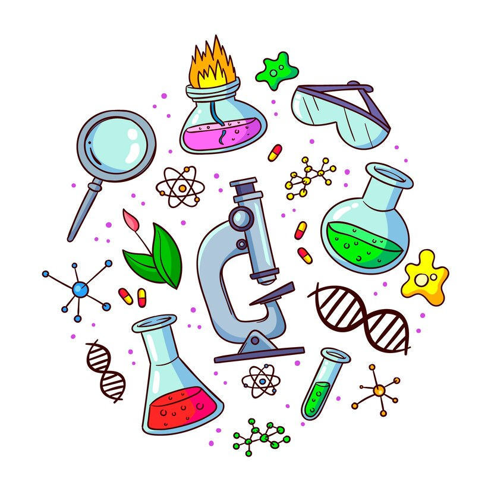
Ciencia
Conjunto de conocimientos obtenidos mediante la observación y el razonamiento, sistemáticamente estructurados y de los que se deducen principios y leyes generales
RAE
La ciencia es el conocimiento obtenido mediante la observación de patrones regulares, de razonamientos y de experimentación en ámbitos específicos, a partir de los cuales se generan preguntas, se construyen hipótesis, se deducen principios y se elaboran leyes generales y sistemas organizados por medio de un método científico.
Mario Bugne 1957, La ciencia: su método y su filosofía
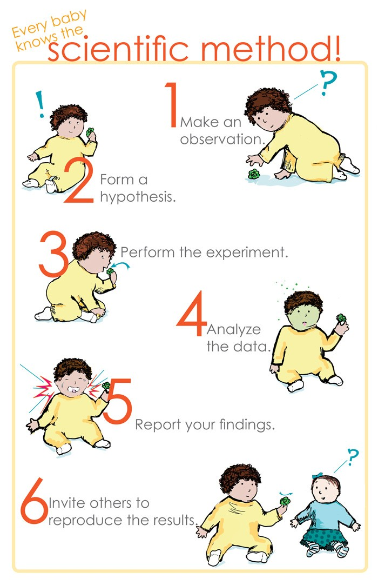
Crisis de Reproducibilidad
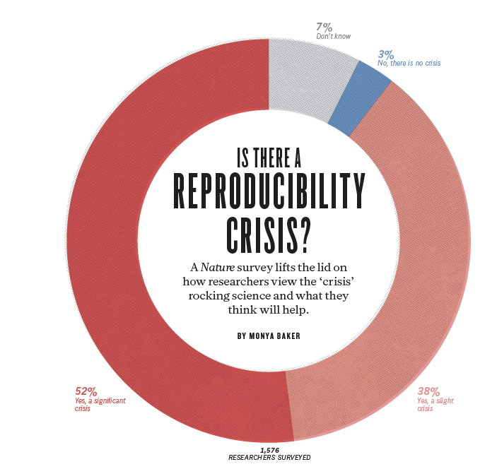
70% investigadores han intentado (sin éxito) reproducir otros experimentos científicos, y > 50% han fallado en reproducir sus propios experimentos
¿mismos datos = mismos resultados?
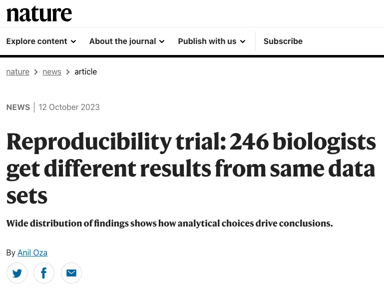
¿problema actual?
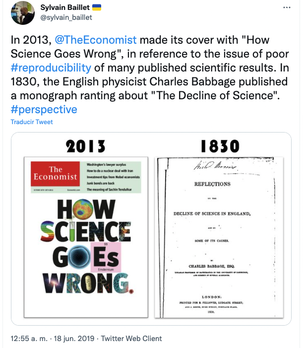
- No es un problema de ahora. Ya en 1830 el físico Charles Babbage publicó una obra sobre el declive de la ciencia
Fraude científico 1
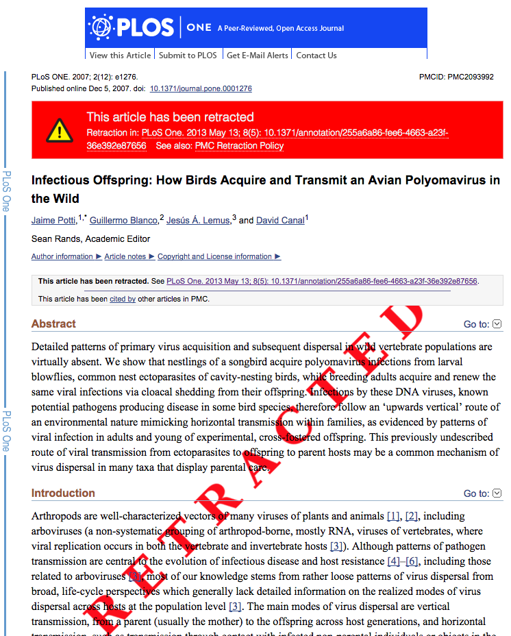
- Investigador contratado por la EBD.
- 36 publicaciones (13 de ellas retiradas)
- Inventó resultados, instituciones, autores, empresas, etc.
¿Qué entendemos por ciencia reproducible?
Investigación Reproducible
Trabajo que puede recrearse de forma independiente a partir de los mismos datos y el mismo código que utilizó el equipo original

Un resultado es reproducible cuando los mismos pasos de análisis realizados en el mismo conjunto de datos producen sistemáticamente la misma respuesta.
A result is replicable when the same analysis performed on different datasets produces qualitatively similar answers.
Robusto: Un resultado es robusto cuando el mismo conjunto de datos se somete a diferentes flujos de trabajo de análisis para responder a la misma pregunta de investigación (por ejemplo, un pipeline escrito en R y otro escrito en Python) y se produce una respuesta cualitativamente similar o idéntica. Los resultados robustos muestran que el trabajo no depende de las especificidades del lenguaje de programación elegido para realizar el análisis.
Gradiente de Reproducibilidad
Flujo de trabajo reproducible: ventajas (I)
- La utilización de código permite la automatización: ejecución de tareas repetitivas sin esfuerzo
- Muy fácil corregir y regenerar resultados, tablas y figuras
- Reducción drástica del riesgo de errores
- Los flujos de trabajo reproducibles facilitan la colaboración
- Mayor facilidad para escribir trabajos al tener registro exhaustivo de todo el proceso de análisis
Flujo de trabajo reproducible: ventajas (II)
La publicación del código:
- ayuda a detectar errores antes de la publicación definitiva
- facilita el proceso de revisión
- facilita la comprensión del artículo y evita malinterpretaciones
La reproducibilidad es un sello de calidad y aumenta la probabilidad de aceptación del trabajo
La reproducibilidad aumenta el impacto de las publicaciones (citas, reconocimiento, reutilización, coautorías)
Ahorro de tiempo y esfuerzo al reutilizar código en otros proyectos
Reproducibilidad: Barreras

Reproducibilidad: Costes
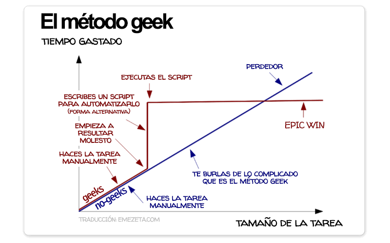
¿Cuándo y Dónde ser reproducible?
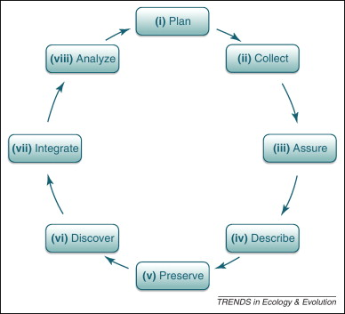
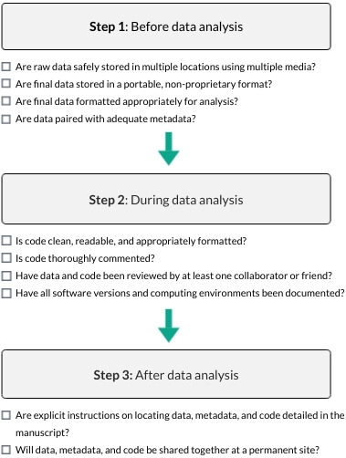
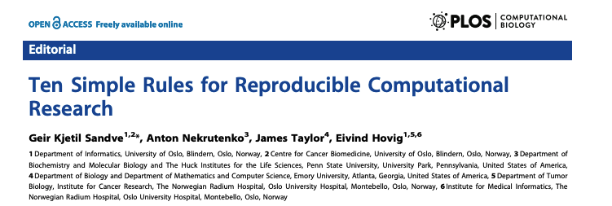
Recursos
Rodríguez-Sánchez F, Pérez-Luque AJ, Bartomeus I, Varela S (2016) Ciencia reproducible: qué, por qué, cómo. Ecosistemas, 25(2): 83-92.
The Turing Way handbook to reproducible, ethical and collaborative data science.
Recursos
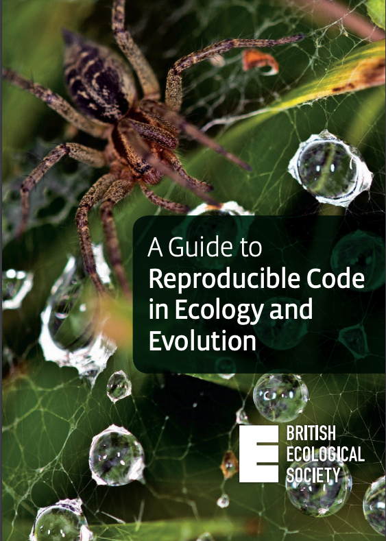
Recursos
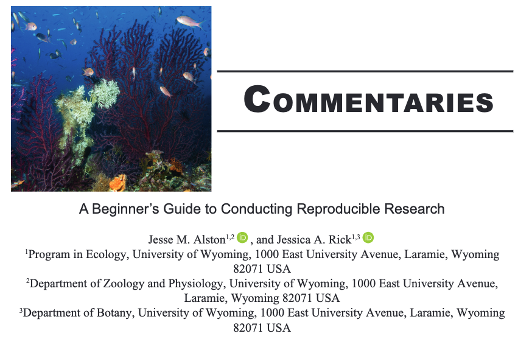
¿Alguna duda?
Ayuda JDC2022-050056-I financiada por MCIN/AEI /10.13039/501100011033 y por la Unión Europea NextGenerationEU/PRTR

Pérez-Luque, A.J. (2025). Reproducibilidad en Ciencia. Material Docente de la Asignatura: Ciclo de Gestión de los Datos. Master Universitario en Conservación, Gestión y Restauración de la Biodiversidad. Universidad de Granada. https://ecoinfugr.github.io/ecoinformatica/
Footnotes
Abril-Ruiz (2019). Manzanas podridas↩︎
Citation
@online{j._pérez-luque2025,
author = {J. Pérez-Luque, Antonio},
title = {Reproducibilidad En {Ciencia}},
date = {2025-01-08},
langid = {en}
}